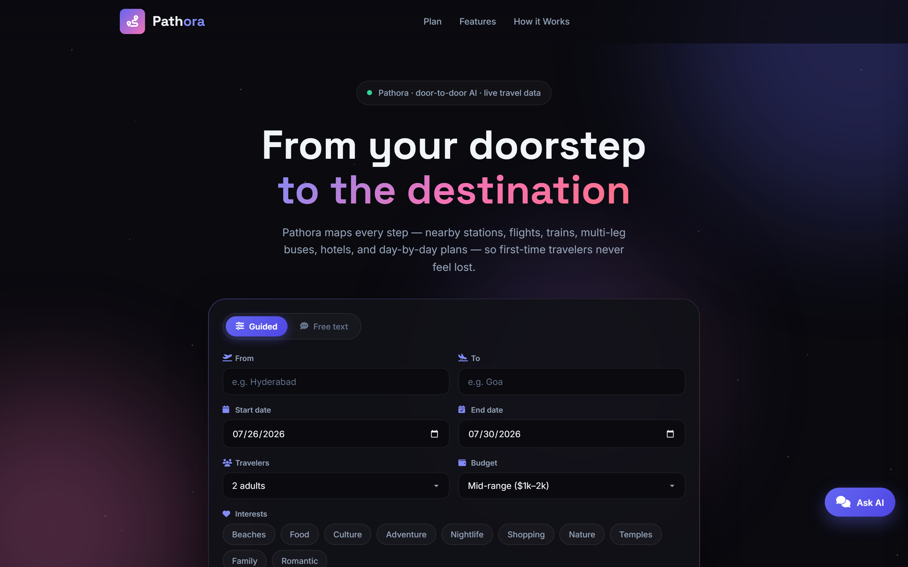

Deep Learning Engineer · GenAI & Agents
Building production LLM systems & AI agents.
I'm Gnana Chaithanya — a Deep Learning Engineer with 2+ years building production AI systems: RAG pipelines, multi-agent workflows, computer vision, and predictive ML, deployed end-to-end across education, healthcare, manufacturing, and enterprise automation.
 AI Agents & Automation
RAG & Custom Chatbots
LLM App Development
MLOps & Deployment
AI Agents & Automation
RAG & Custom Chatbots
LLM App Development
MLOps & Deployment
Core stack I build with
About
I build AI systems that hold up in production.
My focus is the operational gap many AI prototypes skip: reproducible pipelines, versioned models, observability, and deployments that survive real traffic. Over the last two years at DataToBiz and AISPRY I've built automated grading systems processing 1,000+ documents per cycle, multi-provider LLM abstractions with automatic failover, voice/chat interfaces at sub-200ms latency, and predictive maintenance models that cut unplanned failures by 15%.
I work across the full stack of modern AI engineering — from prompt engineering and RAG architecture, to LangGraph/CrewAI multi-agent orchestration, to the FastAPI + Celery + Docker backbone that makes it reliable in production.
- End-to-end ownership: architecture → build → deploy → monitor
- Strong on agentic workflows, RAG, and applied deep learning
- Clear technical documentation and async collaboration
Skills
Everything needed to take an AI product from idea to production.
LLMs & Generative AI
Agent Frameworks
Backend & Async Systems
Deep Learning & Computer Vision
Cloud & MLOps
Data & Vector Stores
Languages & Tooling
Python (Advanced) · SQL · Node.js/Express · Git · Streamlit · Docker Compose
Delivery & collaboration
Requirement scoping · Technical documentation · Async communication · Agile delivery · Cost-aware architecture
Focus areas
What I work on
Core areas I design, build, and deploy end-to-end.
RAG & Knowledge Assistants
Hybrid vector + keyword retrieval systems, document Q&A, and internal knowledge bots tuned for accuracy over your data.
AI Agents & Automation
Multi-agent workflows with LangGraph/CrewAI that plan, research, and execute multi-step business tasks.
LLM Product Integration
Wiring GPT-4o/Gemini/Claude into real products — structured outputs, multi-provider failover, streaming UX.
Computer Vision Solutions
Detection, classification, and image-analysis models — from YOLOv8 pipelines to medical/industrial imaging.
Predictive ML
Forecasting, anomaly detection, and predictive maintenance models with explainability (SHAP/LIME) built in.
MLOps & Deployment
Take a notebook to production: Docker, CI/CD, model registries, and cloud deployment on AWS/GCP/Azure.
Selected Work
Selected work & case studies
Automated Grading System
5-stage async pipeline (Flask + Celery + Redis) grading handwritten exam scripts via Gemini 2.5 Pro Vision — parsing, LLM evaluation, and annotated PDF generation.
AI Persona Emulation Engine
6-stage async LLM pipeline generating synthetic brand personas, with multi-provider abstraction (GPT-4o, Claude, Gemini, Perplexity) and automatic failover.
BMR Predictive Maintenance
9-stage ML pipeline (BiLSTM + Autoencoder) for early prediction of medical device failures, served via FastAPI + Streamlit with SHAP explainability dashboards.
Featured project
Pathora — Door-to-door AI Trip Guide
Turn a one-line “origin → destination” into a blindly-followable travel guide — nearby stations, flights, trains, multi-leg buses, hotels, weather, and a day-by-day itinerary.
What is Pathora?
Pathora is an agentic travel planner you talk to in plain language or through a guided form. You give it origin, destination, dates, budget, and interests — it runs a LangGraph loop with Gemini and 18 live tools (flights, trains, buses, hotels, stations, weather, web search) and builds a complete trip guide you can follow without guessing.
Unlike a generic chatbot that answers “fly or take a train,” Pathora researches real options, names actual stations and services, and stitches first mile → main journey → last mile into one structured plan. A side Pathora Assistant answers follow-up questions grounded in that plan.
What it generates
From one trip request, Pathora produces a full door-to-door travel pack:
- Journey options Flight, train (via nearby stations), and multi-leg bus routes with times, costs, and difficulty
- First & last mile How to get from home to the station/airport, and from arrival to your hotel
- Stay recommendations Hotels and areas matched to budget and interests, pulled from live data
- Day-by-day itinerary Places to visit, food, and timing a first-time traveler can actually follow
- Weather, budget & packing Weekly weather, rough cost estimate, local transport tips, and a packing checklist
- Plan-aware chat Ask “which train is best?” or “cheaper hotel?” and get answers grounded in your plan

Landing · brand & guided plannerThe problem
Generic chatbots say “take a train or fly.” They never name the station, the train, how to get from home to that station, or what to do when there’s no direct route — exactly when first-time travelers need certainty.
The solution
A LangGraph agent drives Gemini Pro through 18 live tools (search, flights, hotels, stations, weather, routing) and synthesizes a structured door-to-door guide — first mile → main legs → transfers → last mile → return — with a plan-grounded side assistant for follow-ups.
- Door-to-door journeys — home → station/airport → legs → hotel, nothing skipped
- Nearby stations & multi-leg routing when no direct bus/train exists
- TTL cache at the I/O boundary + concurrency shedding for free-tier quotas
- Docker on Render with
/health&/metricsobservability
Open Source
More personal projects
Side projects focused on agents, retrieval, vision, and MLOps.
Experience
Where I've built this
Production GenAI, predictive ML, and computer vision — from intern projects to owning systems end-to-end.
Deep Learning Engineer
DataToBiz
Own production LLM systems end-to-end — from pipeline design and multi-provider orchestration to async backends and low-latency voice/chat interfaces used in client-facing products.
- Built a 5-stage async grading pipeline (Flask + Celery + Redis) using Gemini 2.5 Pro Vision for handwritten exam scripts — parsing, LLM evaluation, and annotated PDF generation at 1,000+ scripts/cycle with ~92% marking consistency.
- Designed a 6-stage multi-LLM persona engine with provider abstraction (GPT-4o, Claude, Gemini, Perplexity) and automatic failover, cutting persona workflows by ~70%.
- Delivered a sub-200ms voice/chat interface on WebRTC + Retell AI for real-time conversational experiences.
- Hardened production paths with structured outputs, observability, Dockerized services, and reliable async job processing under real traffic.
AI Engineer Intern
DataToBiz
Applied ML and multi-agent systems for industrial and go-to-market use cases — predictive maintenance, pitch automation, and sales intelligence synthesis.
- Built a 9-stage predictive maintenance pipeline (BiLSTM + Autoencoder) for medical device failure prediction, served via FastAPI + Streamlit with SHAP explainability — ~15% fewer unplanned failures and ~40% faster root-cause diagnosis.
- Implemented a 3-agent CrewAI pitch-deck generator that researches, structures, and drafts decks from product/market inputs.
- Built a GPT-4o sales-intelligence engine that synthesizes insights across 12+ data sources into actionable briefs for sales teams.
Data Science Intern
AISPRY
Research and applied data science across computer vision, NLP, and time-series forecasting — turning model prototypes into usable analysis tools.
- Developed medical imaging models with YOLOv8 and custom CNNs for detection and classification tasks.
- Built legal-document clause extraction pipelines to identify and structure key clauses from contracts and filings.
- Trained LSTM demand-forecasting models and contributed to driver-emotion detection research using vision-based signals.
Education
B.Tech, Computer Science (AI & ML)
Siddharth Institute of Engineering and Technology
Coursework focused on machine learning, deep learning, data structures, and applied AI systems.
Certifications
Contact
Let's talk about AI systems
Open to roles and collaborations in GenAI, agentic systems, RAG, and applied ML. Reach out anytime.